Getting Started with VotanicXR2
This guide describes the initial setup of the VotanicXR2 SDK. By the end of this page, you will have a configured Unity project with core VotanicXR2 features initialized and ready for development.
Prerequisites
Before importing the SDK, ensure your development environment meets the following requirements:
- Unity Version:
Unity 6000.0.82f1 LTSor newer - Render Pipeline: Universal Render Pipeline
Create new Unity project
- Choose a compatible Unity editor version, such as
Unity 6000.0.82f1 LTS
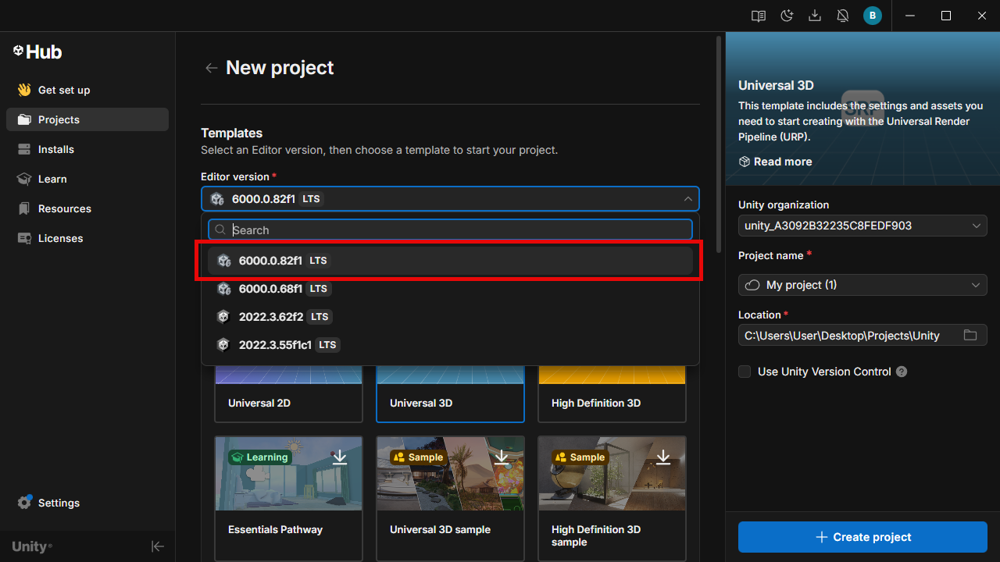
- For your chosen Unity version, select the
Universal 3Dtemplate when you create new project.
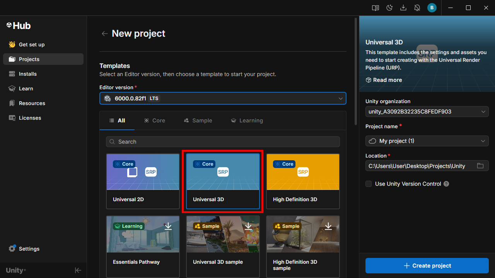
Import SDK unitypackage
When you import the VotanicXR2 SDK, the following packages are also installed automatically as dependecies:
- XR Hands:
1.7.3or newer - XR Interaction Toolkit:
3.2.2or newer
To import the VotanicXR2 SDK package into your project:
Select
Window > Package Manager.In the Package Manager, select the
+button and chooseInstall package from git URL.
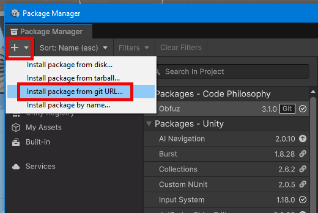
- Copy and paste the SDK git url (https://github.com/VOTANIC/VotanicXR2-SDK-Unity.git?path=/Unity6) into the text box then click
Install. Unity will automatically fetch and install the SDK for the project.
Set up the Unity scene
At a minimum, a scene needs the following to work with VXR2 SDK:
- VXR SDK Manager
- VXR Start Point
You can either set up the scene by:
- Using one of the provided sample scene, or
- Creating a new scene and manually add in the required components
Start with a sample scene
To set up a proper VXR2 scene, go into or duplicate one of the sample scenes and modify them to suit your project need.
Start with a new scene
To set up a proper VXR2 scene using a new scene, do the followings:
Create a new Unity scene.
In the hierarchy, right-click and select
Votanic XR 2 > Spawn SDK Managerand then selectVotanic XR 2 > Spawn Start Point. You should see both the VXR SDK Manager and VXR Start Point spawned within the project.
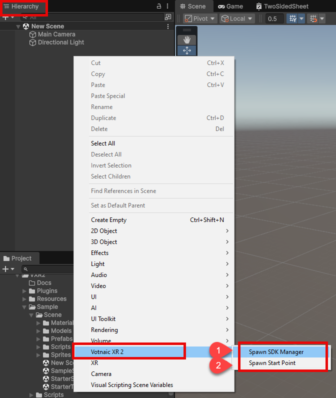
- Select VXR Start Point in the hierarchy and place it to where the user should appear in the scene.
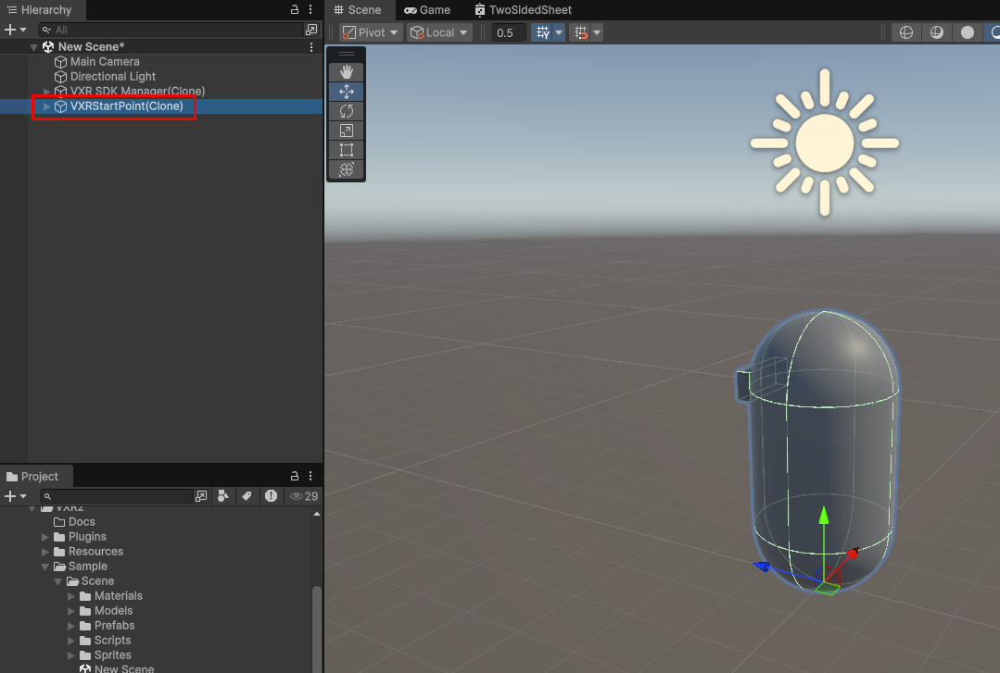
Set up project config and action map
Download the default
.vxr2project config and.jsonaction map from default resources folder on SDK github page.Place the downloaded files under
StreamingAssetsfolder in the project hierarchy.
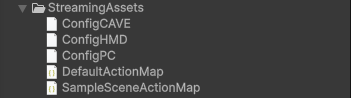
Select VXR SDK Manager in the hierarchy.
Go to VXR SDK Manager component:
- To set the active config of the project, click Select Config and pick the
.vxrc2config file. - To set the active action map of the project, click Select Action Map and pick the
.jsonaction map file.

Configure project settings
- Navigate to the top menu and select
Edit > Project Settings....
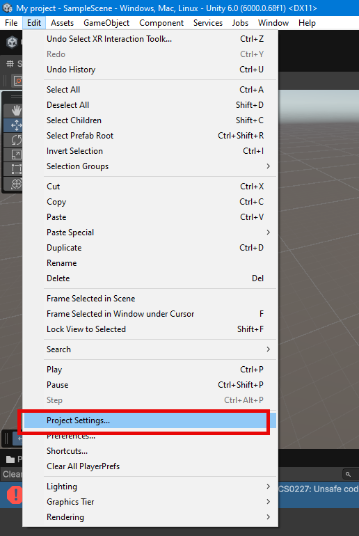
- Select
Votanic > VXR2category.
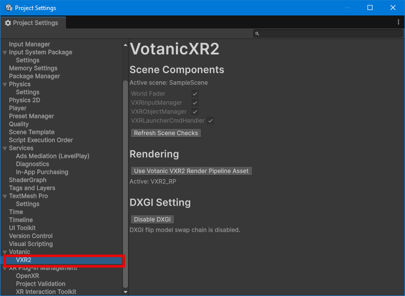
- Click on both Use Votanic VXR2 Render Pipeline Asset and Disable DXGI to apply the settings.
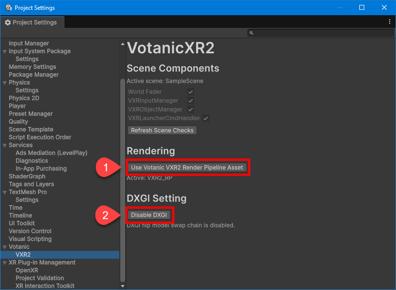
- Navigate to
XR Plug-in Management.
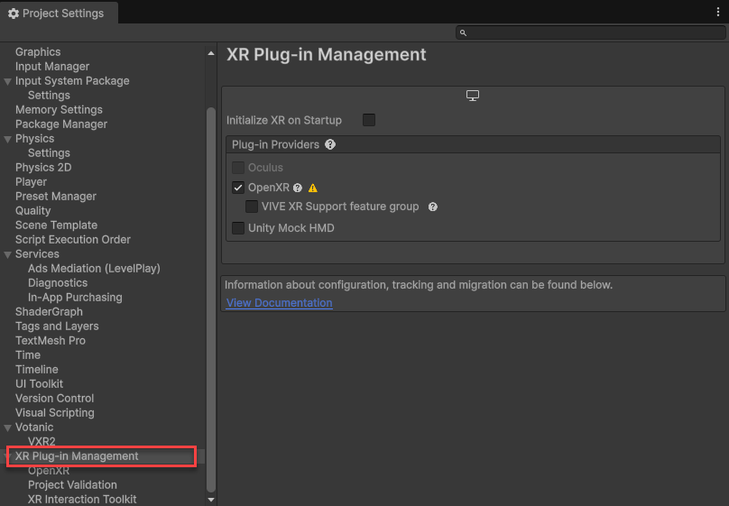
- Tick
OpenXRcheckbox.
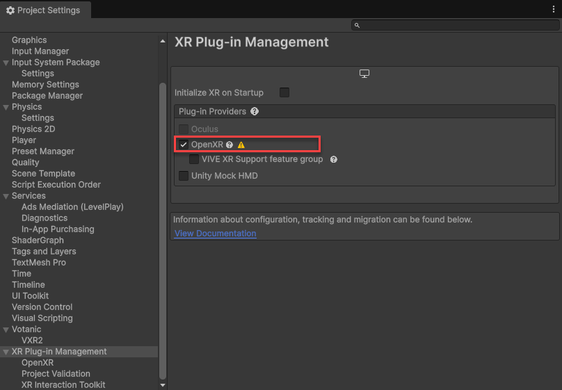
Activate the license key
- Launch the VotanicXR Suite and select License Manager.
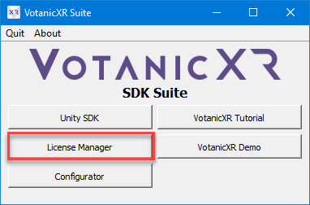
- Select Activate on the bottom-left corner.
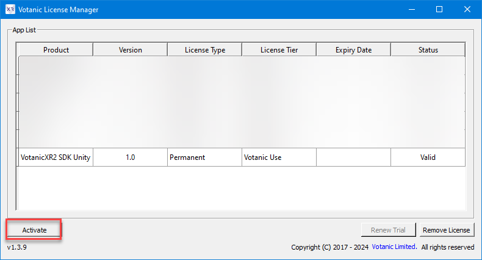
- Input license key in the textbox then press Activation. The newly activated license will be shown in the
App List.
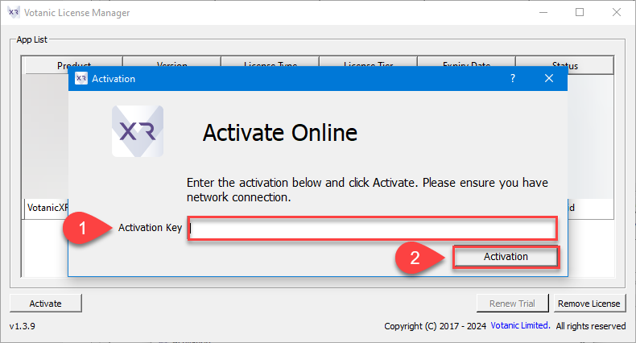
Verify installation
To verify that VotanicXR2 SDK and its dependencies are configured correctly, do the followings:
- Click Play button at the top of Unity Editor to run the scene.
- Test the default controls:
- For PC:
WASDto move,Mouseto look,Spaceto select - For HMD:
LSto move,RSto snap turn,Right Triggerto select
- For PC:
Next steps
Now that you have verified your setup, you can begin building your XR projects with other SDK features: